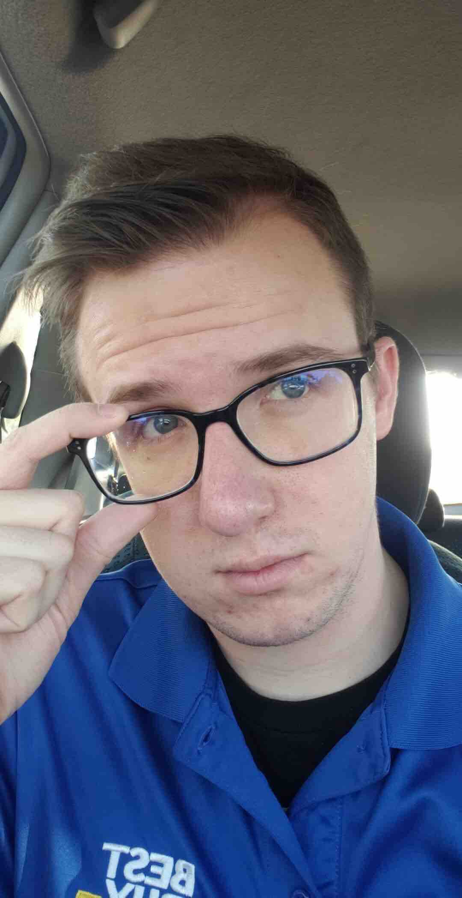
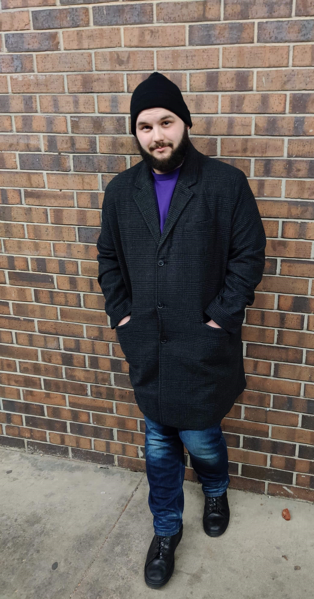
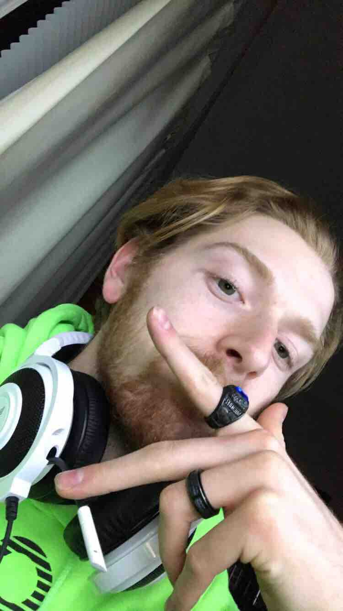
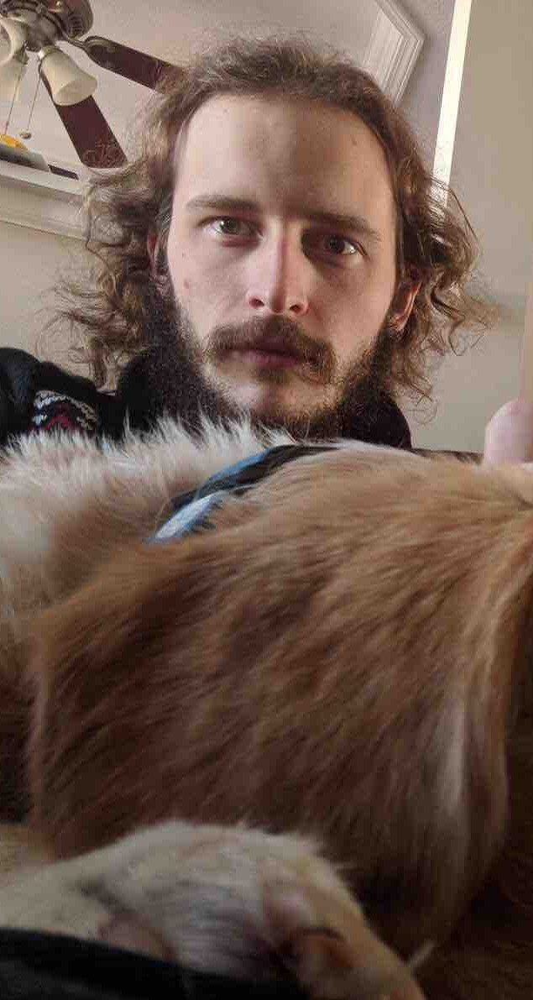

About Us
The Nerd World Country Podcast started with two friends wanting to talk about video games. These two friends were Stephen Samuelson and Kyle Curtis. After releasing a few episodes, these two had other committments that halted production. However, after some time, they have returned... and with some friends! What started as a private Dungeons and Dragons game amongst some close friends is now the Age of Adventure Podcast! After talking about it, Stephen, Kyle, and another friend, Michael Moran, worked to turn what they enjoyed into the Age of Adventure podcast, inviting more friends to join, including Brandon Williams, Nick Zajac, and Lane Starritt. Below is some information on each of the players, and the characters they play as well.
|  | Stephen Samuelson, our beloved Dungeon Master and creative mind. Also Tark. |
|  | Kyle Curtis, plays Nikoom Gel, and one of the original cast members of the Nerd World Country podcast. |
|  | Michael Moran, plays K'Cidge Nol, and loves all things nerdy, whether it be Dungeons and Dragons, Magic: the Gathering, or Star Wars. |
|  | Lane Starritt, plays Cicero, and is the newest addition to the party and podcast. |